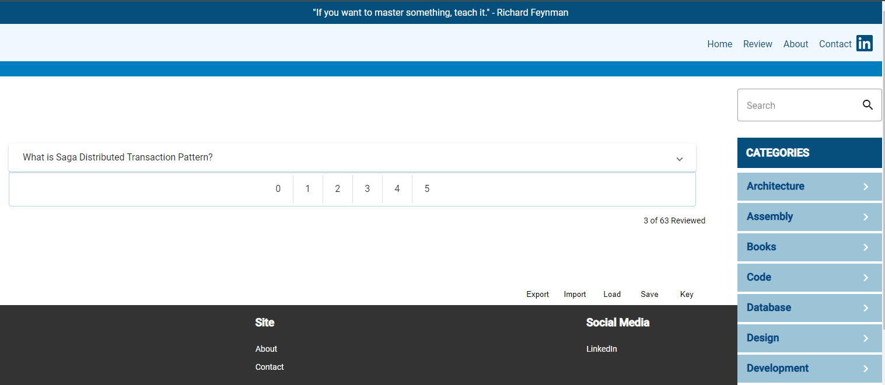

Spaced repetition learning is a technique that has been used for decades to help people learn new information. This web application is a simple implementation of the technique. All content specially taged will be presented in a spaced repetition view.
Using the SM-2 algorithm, the application will present the user with content that they are most likely to forget. The user will then be asked to rate how well they remember the content. The application will then use this information to determine when to present the content again.
As an aside, given the short time I have used this technique, I have found it to be very effective. I have been able to remember information that I would have otherwise forgotten. In order to make the technique more effective, I have worded certain questions to ask how concepts could be applied in a real world.
The application is currently in development. The following is a screenshot of the current UI.
